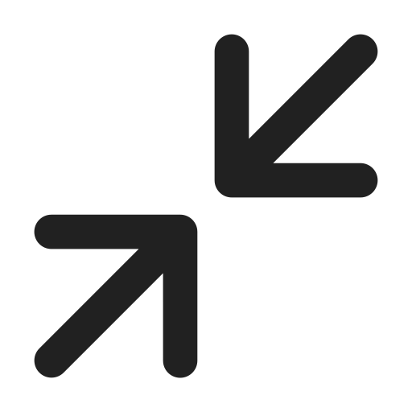

Move or Die
2. Digital Space
Digital space is a virtual environment where digital systems, networks, servers, databases, etc. However, it is based on real physical structures(Figure 2) such as servers, data centers, and internet infrastructure. This physical structure supports and operates digital services and environments. Similar to purchasing real space in cubic meters or square feet, one should purchase digital space in bytes. Digital space prices are generally more affordable than acquiring or maintaining physical space. However, digital space has its limitations and is not infinitely abundant. What forms do works take in digital spaces? And what values and systems are involved in that process?
(Figure2 - Google date center)
Digital Body - Compression Format
Physical artworks are digitized to enter the digital space. Digitization refers to the process of converting artworks into a format usable on computers or digital devices. To digitize, artworks are photographed or scanned with high-resolution cameras, converting them into digital images. These digital images are then transformed into data using binary code, consisting of 0s and 1s, so that computers can understand them. This data is stored in a specific file format for compatibility with systems. Representative formats include mp4 for videos and jpeg for images. The format of an image file is associated with its size. Due to the high capacity of digital images, digital files are often compressed, and compression methods can be categorized as lossless or lossy.
The reason I am interested in image compression methods is that they align with the values of past growth strategies in Korea. In particular, the method of lossy compression prioritizes efficiency, aiming to represent images in high quality while reducing file size. In other words, it aims to efficiently represent and manage elements within limited resources and space, similar to past approaches in Korea.
A prominent format for lossy compression is JPEG. Joint Photographic Experts Group (JPEG) was invented in 1986 and is widely used as a standard algorithm for digital image compression and encoding. It allows high-quality images to be stored in relatively small file sizes. JPEG compression involves color transformation, sampling, quantization, Discrete Cosine Transform (DCT), and Huffman encoding. Through DCT, the program transforms images into the frequency domain using numerous 8x8 matrices (Figure 1). This DCT transformation compresses and represents the image data. JPEG is effective for photo and graphic image processing, particularly for easily sharing and storing images on the web. It boasts compatibility with existing systems and provides smooth support in standardized environments.